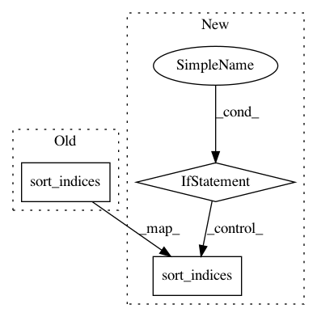

c89f4eacf03534107e9710c6d618e21790ef969e,lightning/datasets/samples_generator.py,,make_nn_regression,#Any#Any#Any#Any#Any#Any#Any#Any#Any#Any#,47
Before Change
train, test = list(cv)[0]
X_train, y_train = X[train], y[train]
X_test, y_test = X[test], y[test]
X_train.sort_indices()
X_test.sort_indices()
else:
X_train, y_train = X, y
X_train.sort_indices()
After Change
train, test = list(cv)[0]
X_train, y_train = X[train], y[train]
X_test, y_test = X[test], y[test]
if not dense:
X_train.sort_indices()
X_test.sort_indices()
else:
X_train, y_train = X, y
if not dense:
X_train.sort_indices()
In pattern: SUPERPATTERN
Frequency: 3
Non-data size: 3
Instances
Project Name: scikit-learn-contrib/lightning
Commit Name: c89f4eacf03534107e9710c6d618e21790ef969e
Time: 2013-08-15
Author: mathieu@mblondel.org
File Name: lightning/datasets/samples_generator.py
Class Name:
Method Name: make_nn_regression
Project Name: lmcinnes/pynndescent
Commit Name: 90d59c873bb5a9ae0ab5b9938e5ccfa086c83b46
Time: 2020-05-29
Author: leland.mcinnes@gmail.com
File Name: pynndescent/pynndescent_.py
Class Name: NNDescent
Method Name: __init__
Project Name: lmcinnes/umap
Commit Name: c7aa43d9ac3411b41fe8dd6e0e4c2a571ec89720
Time: 2018-08-06
Author: johann.faouzi@icm-institute.org
File Name: umap/umap_.py
Class Name: UMAP
Method Name: fit